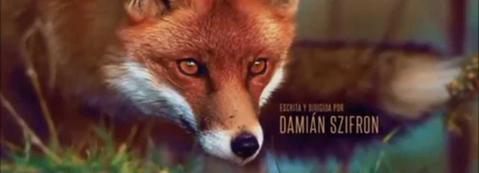

RELATOS SALVAJES
TODOS TENEMOS NUESTRO LADO ANIMAL
La desigualdad, la injusticia y las demandas del mundo en el que vivimos le causan estrés y depresión a mucha gente. Pero algunas de ellas explotan. Esta es una película sobre esas personas. Vulnerables de cara a una realidad que de pronto se vuelve impredecible, los personajes de Relatos salvajes cruzan la línea....
Esta película está compuesta por seis historias completamente distintas. Sin embargo, cada una tiene un punto de comparación: la realidad puede llevar al extremo a sus personajes, al punto de hacer lo imposible por resolver una situación determinada.

En los créditos de apertura de la película, los nombres de cada uno de los actores están acompañados por la imagen de un animal salvaje. El propio director también se incluyó en esta lista y utilizó la imagen de zorro para identificarse."El zorro era un animal que a mi papá le gustaba mucho, siempre veía documentales de zorros, creo que por eso lo elegí", apuntó en una entrevista con el medio argentino.
Los seis cuentos (más bien cortometrajes o sketches) de Relatos salvajes son narrativamente independientes (y desparejos en tiempo y forma) pero están unidos por un temple de ánimo común y una mirada sobre el mundo. No son ni la venganza ni la justicia por mano propia el denominador común, sino una profunda convicción filosófica: cualquier sujeto bajo presión y frente a circunstancias injustas es capaz de desinhibirse, descargar su furia y desnudar nuestra naturaleza animal presuntamente implacable.
Cada uno de los seis episodios (titulados "Pasternak", "Las ratas", "El más fuerte", "Bombita", "La propuesta" y "Hasta que la muerte nos separe") parte de situaciones reconocibles y particularmente irritantes para los argentinos, aunque podrían ocurrir en cualquier país más o menos civilizado del planeta.
PROTAGONISTAS
Protagonistas
"Pasternak"
- Darío Grandinetti como Salgado
- María Marull como Isabel
- Mónica Villa como la profesora Leguizamón
Protagonistas
"Las ratas"
- Julieta Zylberberg como la moza.(La Oveja)
- Rita Cortese como la cocinera. (El Gorila)
- César Bordón como Cuenca
- Juan Santiago Linari como Alexis
Protagonistas
"El más fuerte"
- Leonardo Sbaraglia como Diego Iturralde. (El Venado)
- Walter Donado como Mario
Protagonistas
"Bombita"
- Ricardo Darín
- Oscar Martínez
- Leonardo Sbaraglia
- Érica Rivas
- Rita Cortese
- Julieta Zylberberg
Protagonistas
"La propuesta"
- Ricardo Darín
- Oscar Martínez
- Leonardo Sbaraglia
- Érica Rivas
- Rita Cortese
- Julieta Zylberberg
Protagonistas
"Hasta que la muerte
nos separe"
- Ricardo Darín
- Oscar Martínez
- Leonardo Sbaraglia
- Érica Rivas
- Rita Cortese
- Julieta Zylberberg
Banda de sonido
"Relatos Salvajes"
Tema principal compuesto por Gustavo Santaolalla

TODOS PODEMOS PERDER EL CONTROL

Somos cien por ciento responsables de todo lo que “nos pasa”. Todos creamos nuestras experiencias a través de los pensamientos y sentimientos, pero negamos nuestro poder culpando a otros por nuestras frustraciones."PASTERNAK"
VER VIDEO

“Yo pienso en como me gustaria que fuera las cosas y porque la vida no es como a mi me gustaria”.Vale más actuar exponiéndose a arrepentirse de ello, que arrepentirse de no haber hecho nada. "LAS RATAS"
VER VIDEO
No empieces una pelea que no estás dispuesto a terminar."EL MAS FUERTE"
VER VIDEO

La paciencia tiene un limite.Estalla de furia "BOMBITA"
VER VIDEO
Quién quiere robar a un corrupto no sabe lo que se podrá encontrar. Hasta dónde puede llegar la corrupción? "LA PROPUESTA"
VER VIDEO
¿Hasta dónde es capaz de llegar una mujer traicionada? "HASTA QUE LA MUERTE NOS SEPARE"
VER VIDEO
PREMIOS
Desde su estreno, la película de Damián Szifrón no para de cosechar reconocimientos; España, Francia, Inglaterra, Sarajevo, Perú y Brasil son algunos de los países que la galardonaron.
El suceso de Relatos Salvajes, excede todas las previsiones: fue vista por más de 3.600.000 de personas y nominada y premiada por innumerables jurados. En la Argentina, la película dirigida por Damián Szifrón obtuvo, entre otros, el premio Sur que entrega la Academia de Cine. En el exterior ganó premios desde Lima a Biarritz, fue ovacionada en Cannes y obtuvo el Goya a mejor película iberoamericana.
| Año |
Evento |
Premios |
| 2014 |
Premios Oscar |
Nominada a Mejor película de habla no inglesa |
| 2014 |
Festival de Cannes |
Sección oficial largometrajes a concurso |
| 2014 |
Premios Goya |
Mejor película hispanoamericana. 9 nominaciones |
| 2014 |
Festival de San Sebastián |
Premio del Público (Mejor film europeo) |
| 2014 |
9 Premios Sur |
Incluyendo mejor película y director. 21 nominaciones |
| 2014 |
Premios Ariel |
Mejor película iberoamericana |
| 2014 |
Satellite Awards |
Nominada a Mejor película de habla no inglesa |
| 2014 |
National Board of Review (NBR) |
Mejor película de habla no inglesa |
| 2014 |
Critics Choice Awards |
Mejor película iberoamericana |
| 2014 |
Festival de Cine de Sarajevo |
Premio del Público |
| 2014 |
Festival de La Habana |
Mejor director, Mejor montaje |
| 2015 |
Premios BAFTA |
Mejor película en habla no inglesa |
| 2015 |
Premios Platino |
8 premios incluyendo mejor película, dirección y guión |